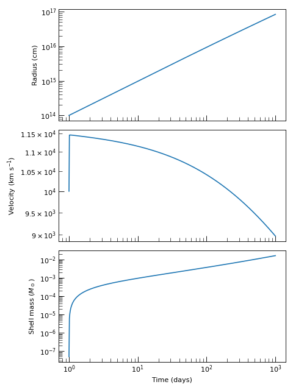

Numerical Shock Engines#
Numerical shock engines integrate the equations of motion as an ODE system and can therefore handle arbitrary ejecta and CSM density profiles, including those that transition between dynamical regimes or cannot be described by simple power laws. For an overview of all shock engines and guidance on choosing between self-similar and numerical approaches, see Shock Engines. For the theoretical derivations of the thin-shell models implemented here, see Theory: Numerical Shock Engines.
Upstream density and velocity profiles for these engines are built with the factory
functions in utils.
Non-Relativistic Numerical Shock Engines#
Two fully implemented non-relativistic engines are available, covering the most common levels of physical detail needed for radio-transient modeling. The table below summarises their applicability and trade-offs.
Engine |
Best For |
|---|---|
Problems where only the shell kinematics matter and no separate energy budget for each shocked layer is needed. Fastest and simplest numerical engine. |
|
Problems requiring separate forward and reverse shock tracking, independent internal energies, or optional radiative cooling in each layer. |
Pressure-Driven Thin-Shell Shock Engine#
The PressureDrivenThinShellShockEngine
collapses the shocked interaction region to a single thin shell of mass
\(M_{\rm sh}\), radius \(R_{\rm sh}\), and velocity \(v_{\rm sh}\). The
shell acceleration is driven by the net post-shock pressure difference estimated from the
instantaneous Rankine–Hugoniot jump conditions, without tracking a separate thermal
energy budget. It is the simplest numerical engine and is well-suited to problems where
the detailed energy evolution of the shocked layers is not needed. For the theoretical
derivation see Pressure-Driven Thin-Shell Model.
The engine integrates the 3-component state vector
governed by
where \(\Delta \equiv u_1(R_{\rm sh},t) - v_{\rm sh}\) is the ejecta–shell velocity lag and \(\chi = (\hat{\gamma}+1)/(\hat{\gamma}-1)\) is the strong-shock compression ratio.
Hint
When the distinction between the forward and reverse shock matters, for example,
when separate post-shock temperatures or independent radiative losses in each layer
are needed, use the
MechanicalShockEngine instead.
Problem Setup#
All numerical shock engines require four upstream source callables that describe the density and bulk velocity just outside each shock face:
\(\rho_1(r,t)\) — ejecta density ahead of the reverse shock.
\(u_1(r,t)\) — ejecta velocity ahead of the reverse shock.
\(\rho_4(r,t)\) — CSM density ahead of the forward shock.
\(u_4(r,t)\) — CSM velocity ahead of the forward shock.
Hint
For the common case of homologous ejecta in a stationary CSM (the standard
assumption for young supernova ejecta) all four callables can be assembled from a
single ejecta kernel \(G(v)\) and a one-argument CSM density function
\(\rho_{\rm CSM}(r)\) using
make_homologous_stationary_sources(). Under
this approximation the homologous ejecta density follows
while the CSM is stationary, \(u_4 = 0\). See
utils for the full catalogue of available ejecta
kernels and CSM profile factories.
Example — profile and engine setup
from astropy import units as u
from trilobite.dynamics.shocks import (
PressureDrivenThinShellShockEngine,
get_bpl_ejecta_kernel,
get_wind_csm_density_func,
make_homologous_stationary_sources,
)
# Chevalier broken-power-law ejecta kernel G(v), normalized to E_ej and M_ej
G_ej = get_bpl_ejecta_kernel(
E_ej=1e51 * u.erg,
M_ej=5.0 * u.Msun,
n=10.0,
delta=1.0,
)
# Steady wind CSM: rho(r) = A * r^-2, A = Mdot / (4 pi v_w)
rho_csm = get_wind_csm_density_func(
mass_loss_rate=1e-5 * u.Msun / u.yr,
wind_velocity=100.0 * u.km / u.s,
)
# Wrap into the four two-argument (r, t) source callables
rho_1, u_1, rho_4, u_4 = make_homologous_stationary_sources(
G_ej=G_ej,
rho_csm=rho_csm,
)
# The engine is stateless — a single instance can be reused
engine = PressureDrivenThinShellShockEngine()
Solving The Shock Properties#
Call
compute_shock_properties()
with a time array, the four source callables, and initial conditions for the shell
radius \(R_0\), velocity \(v_0\), mass \(M_0\), and start time \(t_0\).
The method returns a
ThinShellShockState named tuple with
seven Quantity fields:
Returned Shock Properties
Key |
Description |
|---|---|
|
Shell radius \(R_{\rm sh}(t)\). |
|
Shell velocity \(v_{\rm sh}(t)\). |
|
Accumulated shell mass \(M_{\rm sh}(t)\). |
|
Immediate post-shock density \(\rho_s\) at the forward shock, computed from the strong cold-shock Rankine–Hugoniot relation applied to the upstream CSM density \(\rho_4(R_{\rm sh}, t)\). |
|
Immediate post-shock pressure \(p_s\) at the forward shock. |
|
Immediate post-shock temperature \(T_s\) at the forward shock, computed using the
mean molecular weight |
|
Post-shock thermal energy density \(e_{\rm th} = p_s/(\gamma - 1)\) at the forward shock. |
The four post-shock thermodynamic fields are evaluated at every output time step using
StrongColdShockConditions
with the shell velocity \(v_{\rm sh}\) as the shock velocity and
\(\rho_4(R_{\rm sh},t)\), \(u_4(R_{\rm sh},t)\) as the upstream CSM
conditions. The mean molecular weight mu can be changed at instantiation, e.g.
PressureDrivenThinShellShockEngine(mu=0.62) for a solar-composition plasma.
Note
The ODE integrator used internally is scipy.integrate.solve_ivp() with
method='Radau' and rtol=1e-10 by default. Any extra keyword arguments
passed to
compute_shock_properties()
are forwarded directly to
solve_ivp(), making it straightforward to tighten tolerances
or switch integration methods for stiff problems.
Example — radius, velocity, and swept-up mass
import numpy as np
import matplotlib.pyplot as plt
from astropy import units as u
from trilobite.dynamics.shocks import (
PressureDrivenThinShellShockEngine,
get_bpl_ejecta_kernel,
get_wind_csm_density_func,
make_homologous_stationary_sources,
)
from trilobite.utils.plot_utils import set_plot_style
G_ej = get_bpl_ejecta_kernel(1e51 * u.erg, 5.0 * u.Msun, n=10.0, delta=1.0)
rho_csm = get_wind_csm_density_func(1e-5 * u.Msun / u.yr, 100.0 * u.km / u.s)
rho_1, u_1, rho_4, u_4 = make_homologous_stationary_sources(G_ej, rho_csm)
engine = PressureDrivenThinShellShockEngine()
time = np.geomspace(1, 1000, 500) * u.day
state = engine.compute_shock_properties(
time=time,
rho_1=rho_1, rho_4=rho_4,
u_1=u_1, u_4=u_4,
R_0=1e14 * u.cm,
v_0=1e9 * u.cm / u.s,
M_0=1e26 * u.g,
t_0=1.0 * u.day,
)
set_plot_style()
fig, axes = plt.subplots(3, 1, figsize=(6, 8), sharex=True)
t_days = time.to_value(u.day)
axes[0].loglog(t_days, state.radius.to_value(u.cm))
axes[0].set_ylabel("Radius (cm)")
axes[1].loglog(t_days, state.velocity.to_value(u.km / u.s))
axes[1].set_ylabel(r"Velocity (km s$^{-1}$)")
axes[2].loglog(t_days, state.mass.to_value(u.Msun))
axes[2].set_xlabel("Time (days)")
axes[2].set_ylabel(r"Shell mass ($M_\odot$)")
plt.tight_layout()
plt.show()
(Source code, png, hires.png, pdf)
{kind=link}
{kind=link}

Mechanical Shock Engine#
The MechanicalShockEngine implements the
non-relativistic form of the mechanical shock model of
Beloborodov and Uhm[1], following the simplifications
described in Wang et al.[2]. It
self-consistently evolves separate internal energies for the shocked ejecta (Region
2, between the reverse shock and the contact discontinuity) and the shocked CSM (Region
3, between the contact discontinuity and the forward shock), tracking shock heating,
adiabatic expansion losses, and an optional radiative cooling term.
The engine integrates an 8-component state vector
where \(R_{\rm cd}\) and \(v_{\rm cd}\) are the contact-discontinuity radius and velocity, \(M_i\) and \(U_i\) are the mass and internal energy of each shocked layer, and \(\Delta_i\) are the effective layer widths evolved via a sound-speed closure. The contact-discontinuity acceleration is driven by the pressure imbalance between the two layers,
The shock faces sit at \(R_{\rm rs} = R_{\rm cd} - \Delta_2\) and \(R_{\rm fs} = R_{\rm cd} + \Delta_3\), and advance at speeds
where the sound-speed width closure sets \(c_{s,i} = \sqrt{\gamma_i(\gamma_i-1)U_i/M_i}\). For the full theoretical derivation see Mechanical Internal-Energy Model.
Hint
For most supernova modeling the
PressureDrivenThinShellShockEngine
is faster and requires fewer setup steps. Use the mechanical engine when you need
the forward and reverse shock velocities separately, distinct post-shock temperatures
in each layer, or independent radiative cooling terms.
Problem Setup#
The profile and source-function setup is identical to the pressure-driven thin-shell
engine: build an ejecta kernel with
get_bpl_ejecta_kernel() (or
get_exponential_ejecta_kernel()), build a CSM
profile with one of the factories in utils, and
assemble the four source callables with
make_homologous_stationary_sources().
The additional step specific to this engine is deriving self-consistent initial
conditions for all eight state components.
generate_initial_conditions()
computes \((M_{2,0},\,M_{3,0},\,U_{2,0},\,U_{3,0},\,\Delta_{2,0},\,\Delta_{3,0})\)
from the initial contact-discontinuity position \(R_{{\rm cd},0}\), velocity
\(v_{{\rm cd},0}\), and start time \(t_0\). Swept-up masses are obtained by
integrating the upstream density profiles at \(t_0\), and initial internal energies
are set by the Rankine–Hugoniot specific energy for each shock face. Skipping this
step and setting the eight components by hand typically introduces a sharp artificial
transient at the first ODE step.
Example — profile and initial-condition setup
from astropy import units as u
from trilobite.dynamics.shocks import (
MechanicalShockEngine,
get_bpl_ejecta_kernel,
get_wind_csm_density_func,
make_homologous_stationary_sources,
)
# Ejecta kernel: Chevalier broken power law
G_ej = get_bpl_ejecta_kernel(
E_ej=1e51 * u.erg,
M_ej=5.0 * u.Msun,
n=10.0,
delta=1.0,
)
# CSM: steady red-supergiant wind
rho_csm = get_wind_csm_density_func(
mass_loss_rate=1e-5 * u.Msun / u.yr,
wind_velocity=100.0 * u.km / u.s,
)
# Assemble the four two-argument source callables
rho_1, u_1, rho_4, u_4 = make_homologous_stationary_sources(
G_ej=G_ej,
rho_csm=rho_csm,
)
# Derive a self-consistent 8-component initial condition vector
t_0 = 1.0 * u.day
R0, v0, M2_0, M3_0, U2_0, U3_0, Dlt2_0, Dlt3_0 = (
MechanicalShockEngine.generate_initial_conditions(
R_cd_0=1e14 * u.cm,
v_cd_0=1e9 * u.cm / u.s,
t_0=t_0,
rho_1=rho_1, rho_4=rho_4,
u_1=u_1, u_4=u_4,
)
)
Solving The Shock Properties#
Call
compute_shock_properties()
with a time array, the four source callables, and the 8-component initial condition
vector. The method returns a
MechanicalShockState named tuple with
twenty-two Quantity fields:
Returned Mechanical Shock Properties
The mechanical shock state contains both the evolved ODE variables and a set of derived shock diagnostics. Region 2 denotes shocked ejecta, while Region 3 denotes shocked CSM.
Kinematics and thermodynamics
These quantities are either direct ODE state variables or immediate thermodynamic diagnostics computed from them.
Key |
Description |
|---|---|
|
Contact-discontinuity radius \(R_{\rm cd}(t)\). |
|
Contact-discontinuity velocity \(v_{\rm cd}(t)\). |
|
Swept-up shocked-ejecta mass \(M_2\). |
|
Swept-up shocked-CSM mass \(M_3\). |
|
Shocked-ejecta internal energy \(U_2\). |
|
Shocked-CSM internal energy \(U_3\). |
|
Effective shocked-ejecta layer width \(\Delta_2\). |
|
Effective shocked-CSM layer width \(\Delta_3\). |
|
Layer-averaged shocked-ejecta pressure \(P_2\). |
|
Layer-averaged shocked-CSM pressure \(P_3\). |
Shock geometry
These quantities locate the reverse and forward shocks implied by the evolved contact radius and layer widths.
Key |
Description |
|---|---|
|
Reverse-shock radius \(R_{\rm rs}\). |
|
Forward-shock radius \(R_{\rm fs}\). |
|
Reverse-shock speed \(D_{\rm rs}\). |
|
Forward-shock speed \(D_{\rm fs}\). |
Forward-shock post-shock thermodynamics
These diagnostics describe the immediate post-shock state on the CSM side of the interaction region, i.e. Region 3.
Key |
Description |
|---|---|
|
Immediate post-shock density \(\rho_{s,3}\), computed from the strong cold-shock Rankine–Hugoniot relation applied to the upstream CSM density \(\rho_4(R_{\rm fs}, t)\). |
|
Immediate post-shock pressure \(p_{s,3}\). |
|
Immediate post-shock temperature \(T_{s,3}\), computed using mean molecular
weight |
|
Post-shock thermal energy density \(e_{\rm th,3} = p_{s,3}/(\gamma_3 - 1)\). |
Reverse-shock post-shock thermodynamics
These diagnostics describe the immediate post-shock state on the ejecta side of the interaction region, i.e. Region 2.
Key |
Description |
|---|---|
|
Immediate post-shock density \(\rho_{s,2}\), computed from the strong cold-shock Rankine–Hugoniot relation applied to the upstream ejecta density \(\rho_1(R_{\rm rs}, t)\). |
|
Immediate post-shock pressure \(p_{s,2}\). |
|
Immediate post-shock temperature \(T_{s,2}\), computed using mean molecular
weight |
|
Post-shock thermal energy density \(e_{\rm th,2} = p_{s,2}/(\gamma_2 - 1)\). |
The eight post-shock thermodynamic fields are evaluated at every output time step
using
StrongColdShockConditions.
The forward-shock call uses \(D_{\rm fs}\) as the shock velocity with upstream
conditions \((\rho_4,u_4)\) evaluated at \(R_{\rm fs}\); the reverse-shock
call uses \(D_{\rm rs}\) with upstream conditions \((\rho_1,u_1)\) evaluated
at \(R_{\rm rs}\). Mean molecular weights mu_2 and mu_3 are set at
engine instantiation, e.g. MechanicalShockEngine(mu_2=0.62, mu_3=0.5).
Optional radiative cooling in each layer is enabled by passing cooling_2 and
cooling_3 callables of the signature
cooling(R_cd, v_cd, M, U, Delta, t) -> dU/dt (negative for energy loss) to
compute_shock_properties().
Example — forward and reverse shock temperatures
import numpy as np
import matplotlib.pyplot as plt
from astropy import units as u
from trilobite.dynamics.shocks import (
MechanicalShockEngine,
get_bpl_ejecta_kernel,
get_wind_csm_density_func,
make_homologous_stationary_sources,
)
from trilobite.utils.plot_utils import set_plot_style
G_ej = get_bpl_ejecta_kernel(1e51 * u.erg, 5.0 * u.Msun, n=10.0, delta=1.0)
rho_csm = get_wind_csm_density_func(1e-5 * u.Msun / u.yr, 100.0 * u.km / u.s)
rho_1, u_1, rho_4, u_4 = make_homologous_stationary_sources(G_ej, rho_csm)
engine = MechanicalShockEngine()
t_0 = 1.0 * u.day
R0, v0, M2_0, M3_0, U2_0, U3_0, Dlt2_0, Dlt3_0 = (
MechanicalShockEngine.generate_initial_conditions(
R_cd_0=1e14 * u.cm, v_cd_0=1e9 * u.cm / u.s,
t_0=t_0, rho_1=rho_1, rho_4=rho_4, u_1=u_1, u_4=u_4,
)
)
time = np.geomspace(1, 1000, 300) * u.day
state = engine.compute_shock_properties(
time=time,
rho_1=rho_1, rho_4=rho_4, u_1=u_1, u_4=u_4,
R_cd_0=R0 * u.cm, v_cd_0=v0 * u.cm / u.s,
M2_0=M2_0 * u.g, M3_0=M3_0 * u.g,
U2_0=U2_0 * u.erg, U3_0=U3_0 * u.erg,
Delta2_0=Dlt2_0 * u.cm, Delta3_0=Dlt3_0 * u.cm,
t_0=t_0,
)
set_plot_style()
fig, axes = plt.subplots(2, 1, figsize=(6, 6), sharex=True)
t_days = time.to_value(u.day)
axes[0].loglog(t_days, state.post_shock_temperature_fs.to_value(u.K), label="Forward shock")
axes[0].loglog(t_days, state.post_shock_temperature_rs.to_value(u.K), label="Reverse shock")
axes[0].set_ylabel("Post-shock temperature (K)")
axes[0].legend()
axes[1].loglog(t_days, state.post_shock_pressure_fs.to_value(u.dyn / u.cm**2), label="Forward shock")
axes[1].loglog(t_days, state.post_shock_pressure_rs.to_value(u.dyn / u.cm**2), label="Reverse shock")
axes[1].set_ylabel(r"Post-shock pressure (dyn cm$^{-2}$)")
axes[1].set_xlabel("Time (days)")
axes[1].legend()
plt.tight_layout()
plt.show()
Momentum-Conserving Shock Engine#
The MomentumConservingShockEngine will
implement a non-relativistic momentum-conserving thin-shell model.
Not yet implemented — planned for a future release.
Relativistic Numerical Shock Engines#
Relativistic extensions of all three non-relativistic closures are planned. These will
be necessary for modeling ultra-relativistic outflows such as GRB jets and
mildly-relativistic TDE-driven shocks, where Lorentz factors \(\Gamma \gtrsim 1\)
must be tracked self-consistently. The class objects exist in
numerical but raise NotImplementedError if
called.
Relativistic Pressure-Driven Thin-Shell Engine#
The RelPressureDrivenThinShellShockEngine
will extend the pressure-driven thin-shell formulation to the relativistic regime.
Not yet implemented — planned for a future release.
Relativistic Mechanical Shock Engine#
The RelMechanicalShockEngine will
implement the full relativistic mechanical model of
Beloborodov and Uhm[1].
Not yet implemented — planned for a future release.
Relativistic Momentum-Conserving Shock Engine#
The RelMomentumConservingShockEngine will
implement a relativistic momentum-conserving shock engine.
Not yet implemented — planned for a future release.